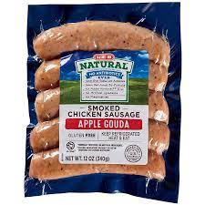

Sausage and Rice

Description
Apple guoda sausage, rice, and vegetables of your choice
Ingredients
- Rice
- HEB Apple guoda sausage
- Vegetables (Brocolli works well)
Steps
- Start cooking the rice in a ricemaker
- Bring water in a pan to a boil
- Add sausage links to the pan (cook for 7 minutes per side)
- Cook vegetables (I cook brocolli in a pan for 5 minutes then add water)
- Cut sausage up for my kid
- Add cut sausage back to pan to sear
- serve with rice and vegetables
Back to recipe list